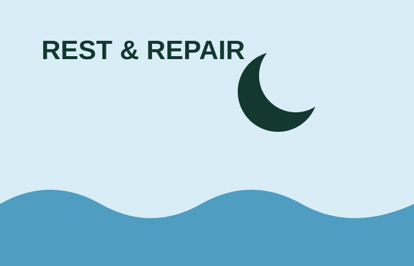

Recovery and muscle repair
Recovery is how you make your training routine possible again. The basics are not exciting, but they matter: sleep, food, water, rest days and managing your training load.

Recovery basics
- Sleep regularly and give yourself time to rest.
- Eat and drink enough for the exercise you are doing.
- Take easier days when your body needs them.
- Use good technique instead of trying to push through pain.
Being very sore does not automatically mean you had a better workout. Persistent pain, severe fatigue, dizziness or illness are signs to stop and get appropriate professional advice.
Ice baths: simple, honest information
Ice baths, also called cold-water immersion, are popular after sport. Some people use them because they feel refreshed or need to recover for another event soon. They are not a replacement for sleep or food.
For people mainly training for muscle growth, using cold water straight after every strength session may not be the best choice. Research suggests frequent post-lifting cold-water immersion may reduce some long-term muscle-growth adaptations.
Read the systematic review about cold water and hypertrophy.
Safety: cold water can be stressful. Do not use this page as an ice-bath instruction. If you have a health condition, are unsure about cold exposure, or feel unwell, speak to a healthcare professional first. Never use an ice bath alone.